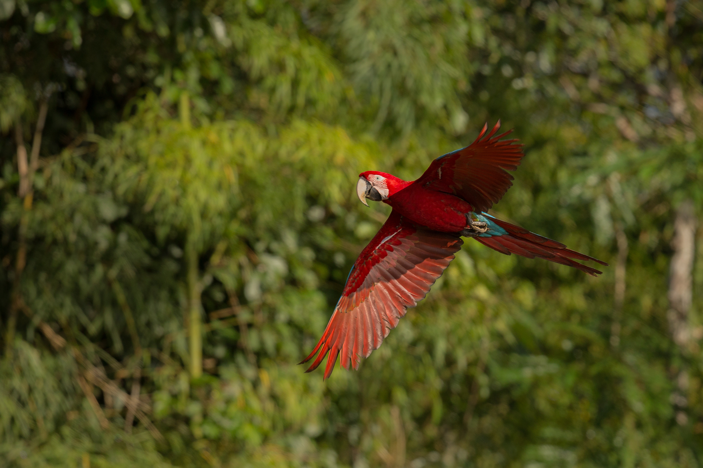
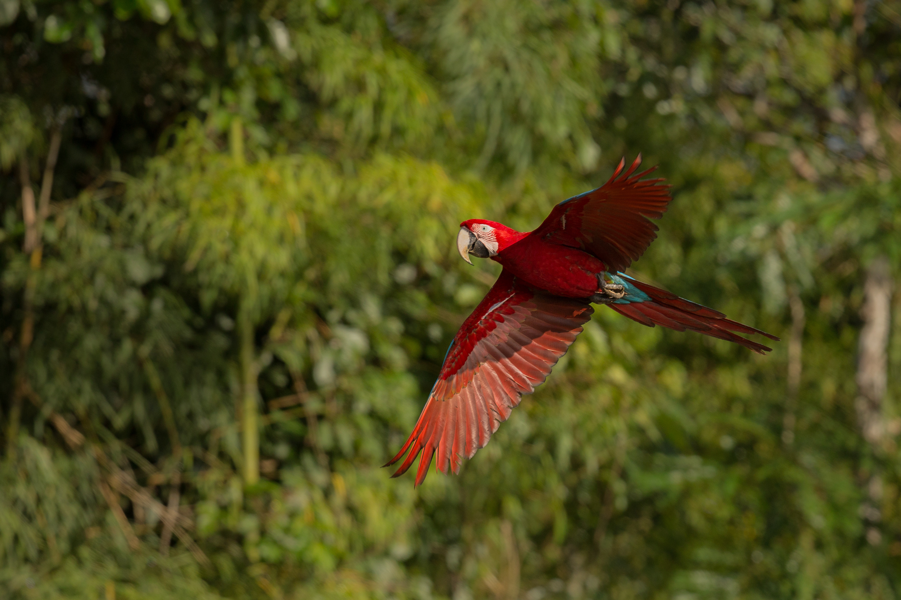

Projeto Asas Livres
Resgate e reabilitação de aves vítimas de tráfico e maus-tratos, com o objetivo de reintroduzi-las na natureza.
Resgate e reabilitação de aves vítimas de tráfico e maus-tratos, com o objetivo de reintroduzi-las na natureza.
Campanha de reflorestamento e recuperação de áreas degradadas que servem de abrigo para espécies ameaçadas.

Programa educativo em escolas públicas para conscientizar crianças sobre a importância da preservação ambiental.

Você pode apoiar nossos projetos com doações ou participando como voluntário.